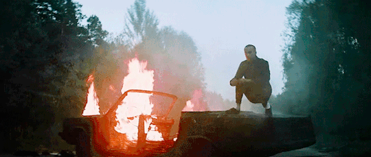
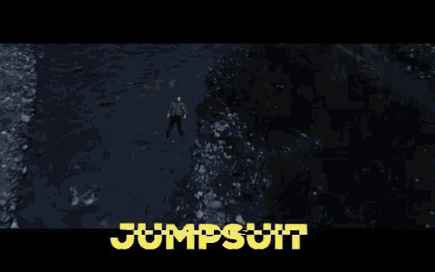

Trench is the 5th album from the young dou Americans Twenty one Pilots AKA “T1P”. the album has a very strong meaning behind everything
ok this is kind of it (I'm not a theorist) but i know a little, so basicallyback in 2017 they made i think their last 2017 song. it's called heavydirtysoul
the music video
so basically he goes around rapping then singing and while all that the car is getting loose more and more first the wheels then the doors then the roof and in the last part of the video the car catch on fire and tyler exits it and head to josh then the car explode. The end, it took the band a whole year to show up again on a song in a concert or interview or a video a url got viewed in a split second this lead to a website with many pics and gifs. some is like a vulture and old creepy "blueprint" of some kind of an ancient city (but more like a civilisation because of the shape). People went crazy and searched through everything. A whole wikipedia and a whole reddit post of everything where everyone write what they find and speculate. This lead to the leak of the album trench. Going to the time on July 11, 2018 as the first of the singles from their fifth studio album Trench (2018), alongside "Nico and the Niners". It is the first song to be released by the band after a year-long public silence.
in jumpsuit, u could see tyler on an exploded car
this leads us to know that this is the same car in the music video heavydirtysoul. In the music video you could also see tyler in a valley
he walks slowly through the valley
while walking people show up wearing a uniform showing that they are an army up the mountain looking at him, the same pic of them watching him was found in the old url (in black and white + filter)